06/11/2026 · Telas01/02, mesma rota /conta. Complemento do perfil é estado autenticado dessa rota. Antes capturado antes da implementação; nenhuma composição anterior para o novo complemento de nome. Novos botões, retorno PKCE e feedback de indisponibilidade. Sem modal novo; recuperação/confirmação existentes preservadas.
Ambientes: aplicativo de desenvolvimento na porta3000, sem login pessoal; complemento em produção local compilada na porta3200 com Supabase local e contas descartáveis. Desktop e Chromium/Pixel7 emulados. Capturas completas têm alturas diferentes conforme o conteúdo; isso não representa mudança de largura do viewport. Redução de movimento usada nas capturas posteriores. Os arquivos de imagem autenticados usam a escala do dispositivo emulado.
Limites: provedores não configurados. Nenhuma captura ou teste comprova consentimento real Google/Apple, sessão após OAuth externo, Safari ou aparelho físico. Atlas é offline e não salva nomes. Contrato e ativação.
Arquivo: app-antes-desktop.png · imagem1280×930px
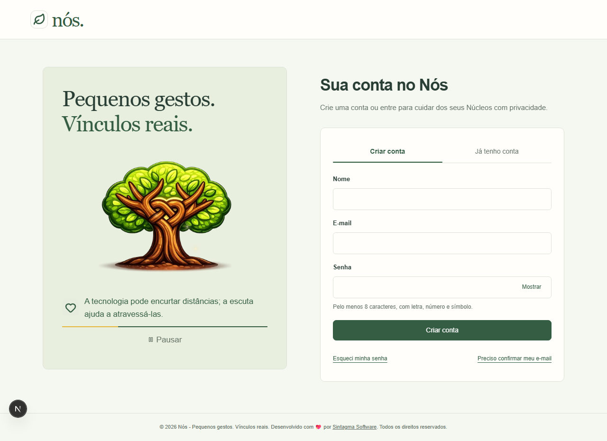
Arquivo: app-antes-mobile.png · imagem390×1395px
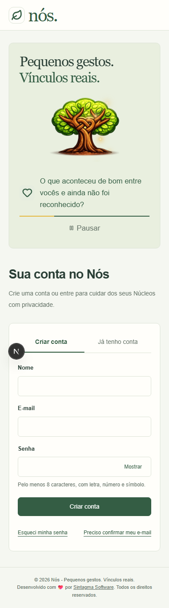
Arquivo: app-completar-nome-desktop.png · imagem1280×720px
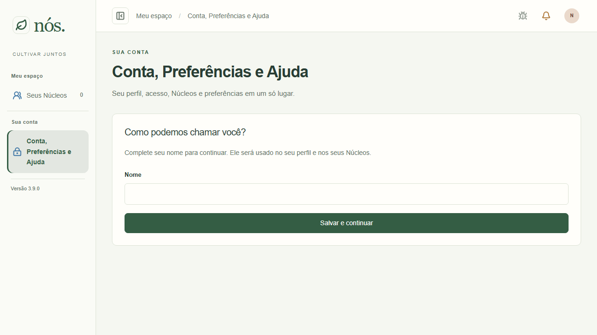
Arquivo: app-completar-nome-mobile.png · imagem1082×2202px
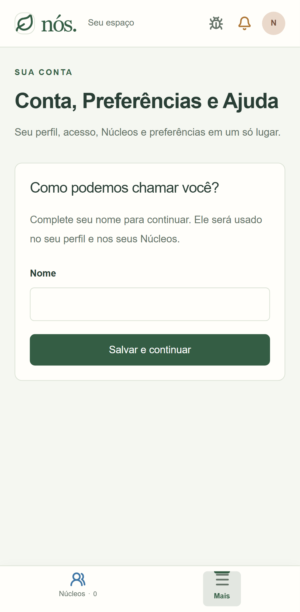
Arquivo: app-depois-desktop.png · imagem1280×1088px
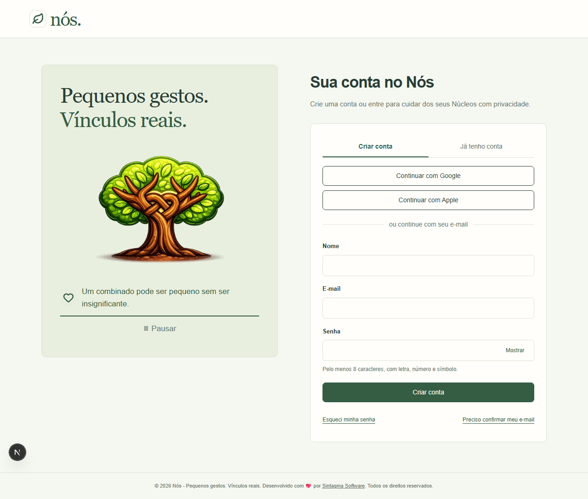
Arquivo: app-depois-mobile.png · imagem390×1526px
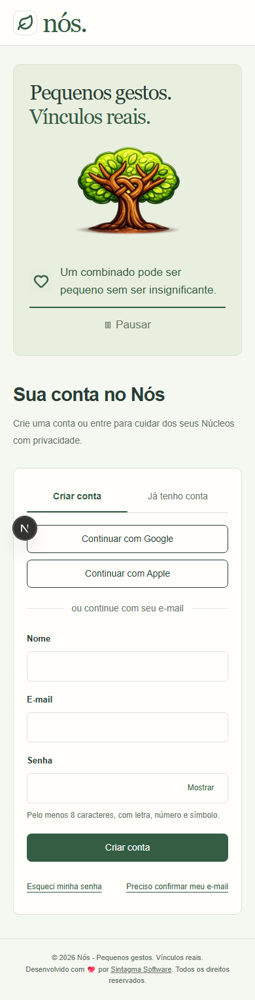
Arquivo: app-indisponivel-mobile.png · imagem390×1617px
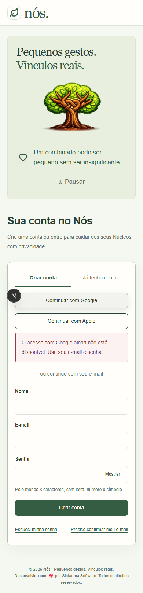
Arquivo: atlas-antes.png · imagem1280×2606px
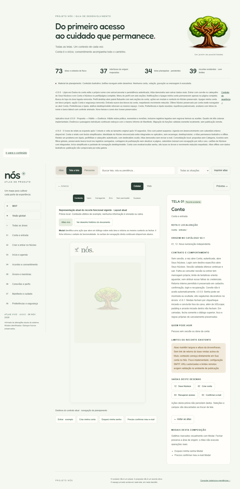
Arquivo: atlas-completar-nome.png · imagem1280×2656px
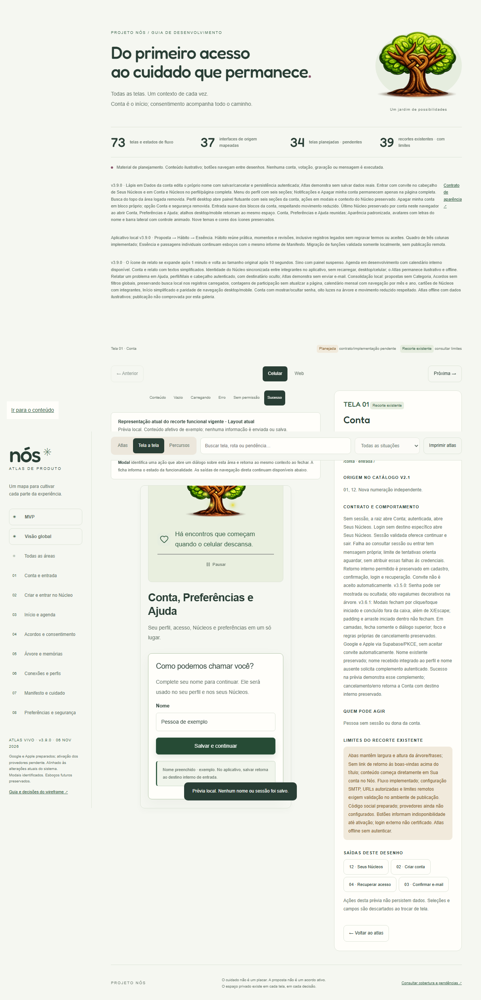
Arquivo: atlas-depois-desktop.png · imagem934×1211px
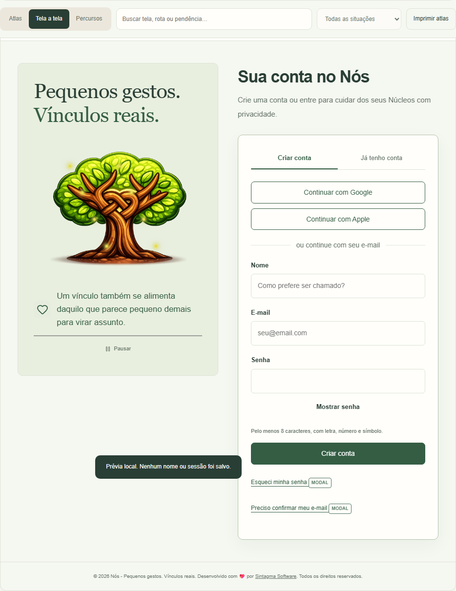
Arquivo: atlas-depois-mobile.png · imagem402×1638px
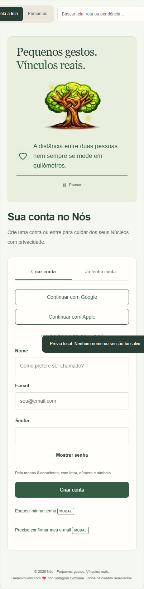